Rochester research pulse .filter-actions button:hover,.hero-showcase {
Focus your team on breakthroughs, not busywork.
MedCityAI tracks every PubMed update tied to Rochester, Minnesota and surfaces the papers, people, and programs that are shaping tomorrow's care. Spend less time sorting abstracts and more time moving discoveries forward.
.filter-actions button:focus { position: relative;
Explore latest findings border-color: var(--accent);}
View analytics dashboard
color: var(--accent);.hero-card {
} position: relative;

padding: 34px;
font-size: 0.8rem; background: rgba(10, 20, 48, 0.78);
New Today color: var(--text-muted); border: 1px solid rgba(255,255,255,0.08);
0
Freshly indexed papers in the last 24 hours border-top: 1px solid rgba(255, 255, 255, 0.06); box-shadow: var(--shadow-lg);
padding-top: 12px; overflow: hidden;
This Week
0 margin-top: 6px; display: flex;
Seven-day window tracking Rochester output
} flex-direction: column;
This Month gap: 20px;
0
Rolling thirty day volume across specialties .results-panel {}
display: flex;.hero-card::before {
Library Size
0 flex-direction: column; content: '';
Articles in the MedCityAI knowledge graph
gap: 24px; position: absolute;
Intelligence that stays current
Our pipeline refreshes daily so your teams never miss a high-impact Rochester study, clinical trial, or translational milestone.
display: flex; pointer-events: none;Context you can act on
Concise AI-assisted briefings add clarity on why a paper matters, who authored it, and where collaboration could accelerate impact.
gap: 16px;.hero-card h2 {Built for real workflows
Target the right evidence with precision filters, Rochester affiliated author flags, and direct handoffs to PubMed or analytics views.
} font-size: 1.3rem; margin: 0;.hero-card p {
border: 1px solid rgba(255, 255, 255, 0.08);.hero-card-metric {
padding: 6px 12px; display: flex;
color: var(--text-primary); font-size: 0.95rem;
padding: 6px 10px;}
border-radius: 999px; align-items: center;
Latest Rochester research
Loading publications...
} justify-content: space-between; padding: 12px 16px;
background: transparent; color: var(--text-secondary);
United States footprint
display: grid; font-variant-numeric: tabular-nums;Map Rochester collaborations across the United States to spot emerging institutional partners.
} position: relative;
Global reach
Visualize Mayo Clinic global research links and identify regions ready for expansion.
margin-top: -40px;